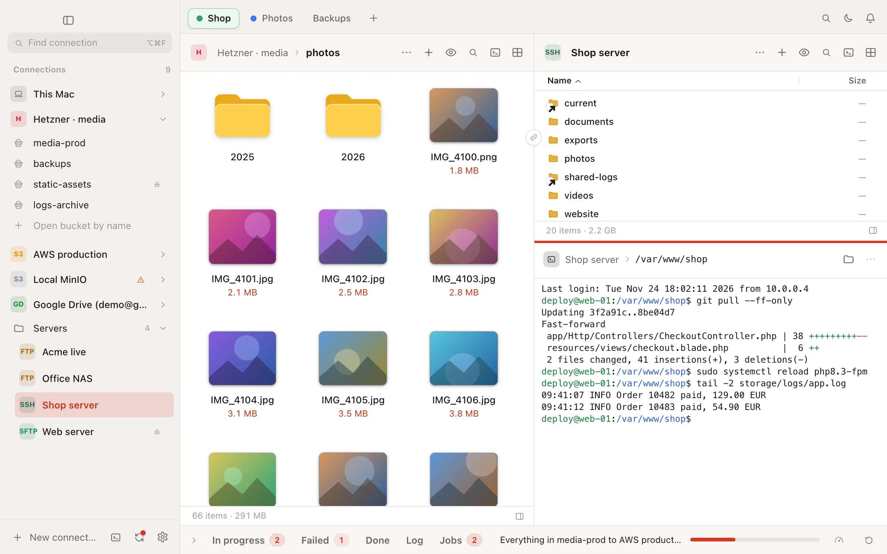
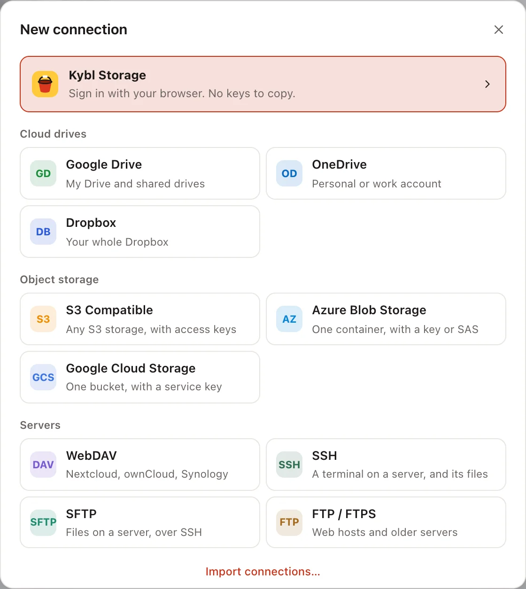
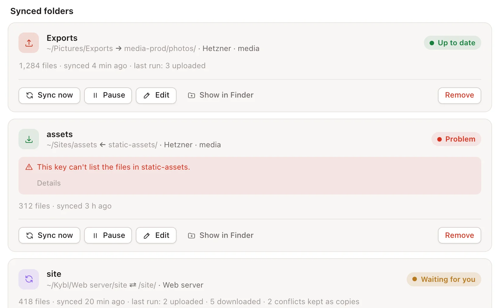

Thumbnails in a blink
JPEGs use the photo's own EXIF thumbnail, read from the first 256 KB, and everything is cached on disk. A folder you've seen opens instantly.
Free desktop app · macOS, Windows, Linux
Browse, upload, share and sync files on AWS S3, Cloudflare R2, Hetzner, Backblaze B2, Wasabi, DigitalOcean Spaces and MinIO. Your keys stay in the system keychain.

Any S3-compatible storage
Pick a preset, paste your access key and you're in. Kybl fills in the endpoint and region, tells you about each provider's quirks and can test the connection before you save it.
Secret keys go to the macOS Keychain, Windows Credential Manager or Secret Service. Never into a file.

Features
Everything you expect from a file manager, made for buckets that hold a hundred files or a million.
JPEGs use the photo's own EXIF thumbnail, read from the first 256 KB, and everything is cached on disk. A folder you've seen opens instantly.
Presigned links for 1 hour, 1 day or 7 days. Nothing to make public.
Files or whole folders, straight from Finder or Explorer. Big files go up in parts.
Speed and time left for every upload and download. Cancel one, retry the ones that failed, keep working meanwhile.
Images, video, audio, PDF and text open right in the details panel.
Lazy paging keeps 100,000-file folders smooth. Search looks through every subfolder.

Folder sync
Point a local folder at a bucket and pick a direction. Kybl watches for changes, skips what you tell it to ignore and keeps going from the menu bar.
node_modules, .DS_Store and friendsSync status
One look at the little bucket and you know: all good, busy, resting or in need of a hand.
Questions
Any S3-compatible storage: Amazon S3, Cloudflare R2, Hetzner Object Storage, Backblaze B2, Wasabi, DigitalOcean Spaces, MinIO, Ceph and other S3 servers. Presets fill in the endpoint and region for the common providers.
Yes. Kybl is a free download for macOS, Windows and Linux. You use your own bucket and pay your storage provider as usual.
Secret keys are stored in the operating system keychain: the macOS Keychain, Windows Credential Manager or a Secret Service such as GNOME Keyring on Linux. They are never written to a file, and Kybl talks to your storage directly.
Yes. Pick a local folder, a bucket and a direction (upload or download). Kybl watches for changes, skips files that match your ignore rules and keeps syncing from the menu bar when the window is closed.
Yes. Large files upload in parts (multipart upload), folders with hundreds of thousands of objects load page by page, and search looks through every subfolder.
Download
Free. Native on every platform, built with Rust and Tauri, so it starts fast and stays light.
Kybl is signed but not yet notarized. On the first launch, open System Settings → Privacy & Security and click Open Anyway. Updates keep the same signature, so you won't be asked again. On Windows, if SmartScreen warns, click More info → Run anyway. On Linux, secret keys need a Secret Service such as GNOME Keyring or KWallet.